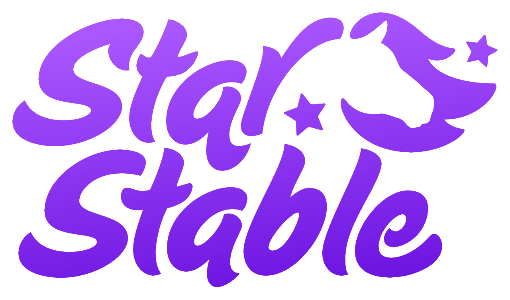

Deleted
Usernames


This project aims to preserve and share information about character names that are no longer available on Star Stable Online and now count as "rare names".
Most of these names were removed in 2013, while others were removed later, in 2016 and 2017.
We also archive character names that are still available, but only in specific languages.
Please note that Russian names are not included, as we are not familiar enough with the Cyrillic alphabet to document them accurately.
Removed names list
Archive of all removed names
Rare and unique usernames
Names still available in different languages
Thanks to everyone who helped